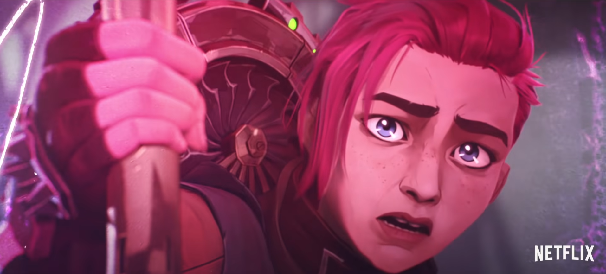
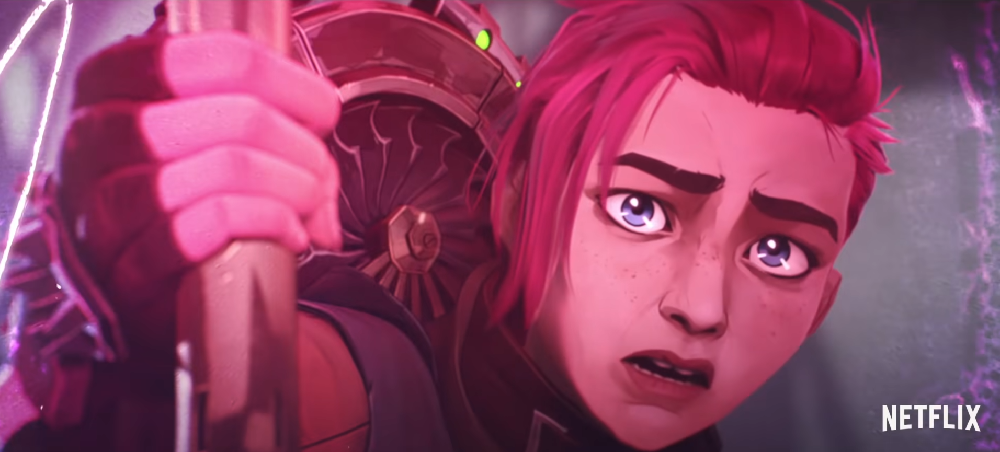
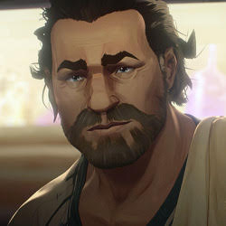
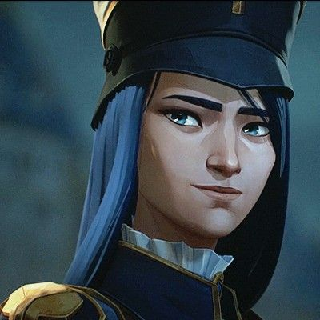
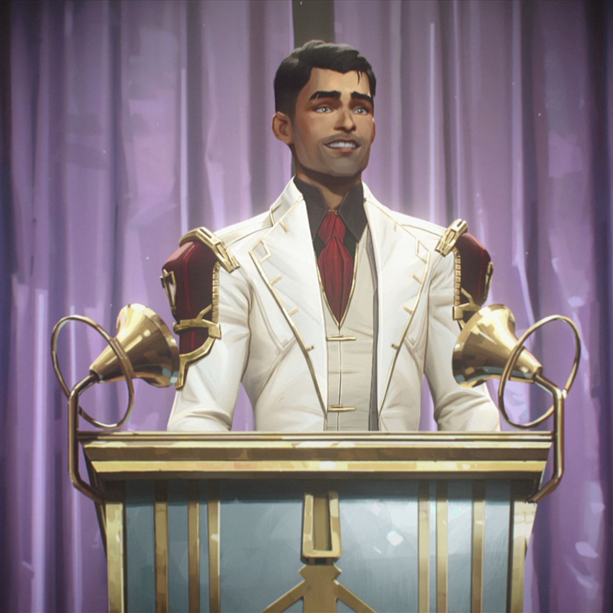

Jinx, also known as Powder in earlier episodes, is the younger sister of Vi. Although not biologically related, they shared a strong sisterly bond with one another. She admired her older sister as a child and would build explosives and gadgets to aid in their numerous misadventures, though they were never functional. On the day her bombs eventually detonated, she inadvertently caused the death of Vander and her brothers. Vi went on to blame Powder for the incident and referred to her as a "Jinx" before the two were separated, with Powder believing Vi had abandoned her. Afterward, she was found and adopted by Silco, and later became his most capable subordinate. She slid into insanity and performed several acts of terrorism under the name “Jinx"” for many years until Silco's death. She swiftly established herself as a force to be reckoned with in Piltover's streets, wreaking havoc wherever she went. She and Vi wouldn’t see one another for 10 years.
 

Vi is the older sister of Powder and together they live in the Undercity. She is very protective of her sister, frequently defending her from their adopted brother’s bullying. When they were younger, she was Powder's greatest fan, and they often sat together marveling at the mechanics Powder had created. Vi instructed her sister to remain back when Vander was kidnapped so she wouldn’t get hurt, however, this caused Powder to have a nervous breakdown, and she ended up going, setting off her bombs, and the rest is history. While Powder thought she was abandoned by Vi, Vi was actually arrested and stayed in prison for 5 years. She was finally freed when Caitlyn was investigating Silco and needed her intel. When she and Powder reunited as teenagers, Powder was not the same little sister that she had always known but rather “Jinx.” Jinx killed Silco in order to protect her, which caused the rest of Powder's psyche to leave her body and accept her new identity as Jinx. They are once again divided as a result of that incident.
Vander is the father figure for Vi and Powder, as they both lost their parents during a Zaun uprising against Piltover. He’s also the leader of the Undercity and becomes the bartender at a bar called “the Last Drop,” the Undercity’s main meeting place. It is also revealed that he has a complicated relationship with Silco, one of the show’s primary antagonists. It’s hinted that the two had a brotherly bond until events forced them to engage in a deadly struggle, in which Silco was severely injured. Vander also arranged a tense agreement with Piltover’s enforcers, bringing relative peace to the Lanes.
Born into the wealthy Kiramman clan, one of Piltover's reigning houses, is Caitlyn Kiramman. She joined the Enforcers as a young woman to establish a name for herself, eager to see the world for herself and to stray from the elite life that her parents raised her in. She developed into a highly accomplished markswoman and become close to Jayce Talis, an Academy student that her parents were sponsoring. While an enforcer, she came to the conclusion that someone was behind all of the violence in the Undercity as a result of the cases she encountered and her own investigations. Nonetheless, her inquiries were never taken seriously so she took matters into her own hands. She visited Stillwater Hold (Prison) and encountered Vi. The two start off as partners but form a close friendship as a result of their shared experiences, and they learn to trust each other despite their differences.
Silco is the antagonist of the story and the inventor of Shimmer. He is a despotic Zaunite criminal lord and industrialist who is hell-bent on gaining Zaun's independance from Piltover and is ready to go at any length to do it. During a dispute with Vander, Vander betrayed Silco and attempted to drown him in Zaun's polluted waters, resulting in Silco having a mutated left eye and severly disfigured face. Although a cruel person, he is shown to have some level of compassion as he takes in Powder (Jinx) in after she was left behind by Vi, and raises her. Powder's extreme mental instability made the majority of Silco's organization uneasy, yet even when they openly complained, Silco would protect her and keep her at his side. Over time, he grew to admire her talents and adore her as if she were his own daughter.
Viktor is a scientist from the Undercity. He has a leg condition that has prevented him from walking and running naturall since birth, requiring the use of a walking stick to go around. His health would deteriortate dramtically when he was exposed to the pollution in the Undercity. After he invented Hextech along with Jace, Viktor had been gradually replacing his body parts while dabbling in self-augmenting hextech projects and eventually transitioned to mechanical augmentations, ultimately replacing most of his bodily parts. Viktor was unable to fully harness the power of Hextech despite his best attempts. His faith in Hextech's ability to adapt and learn was shattered by a lack of success in his experiments. Victor made one of Piltover's most important discoveries thanks to a bout of illness and a few drops of blood.
Jayce Talis is a brilliant inventor and partnered with Viktor, invented Hextech. With his invention, he was inducted into the Coucil and later became the head council member. Jayce's early years in Piltover are shrouded in mystery. His father died at some point, leaving him and his mother to run the Talis family hammer business. Jayce and his mother were stuck in a snowstorm when he was a child, with no one nearby for miles. Just when his mother was about to pass out, a cloaked figure appeared and used magic to transport them safely away from the snow. The stranger handed Jayce the crystal he'd cast his spell with. This experience motivated Jayce's ambition to learn more about magic and, later in life, to use his knowledge to harness magic through science. Jayce began to illegally research the crystals but was discovered as a result of an explosion made by Vi, Powder and their brothers. He faced severe punishment, to the point where he considered ending his own life before he was stopped by Viktor.With his help, Jayce figured out how to keep the crystals stable. Jayce would eventually gain the favour of the other Councilors by assisting them in the creation of the Hexgates using Hextech, which revolutionised trade and transportation and established Piltover as a worldwide shipping lane.
Return to the top of the page.